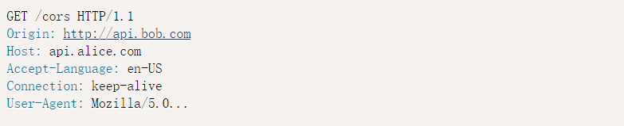
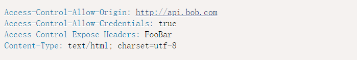
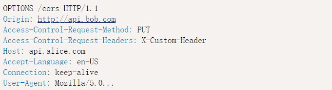
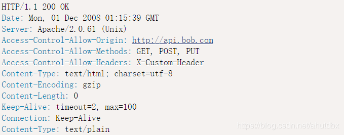
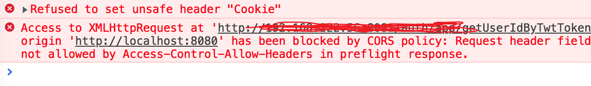
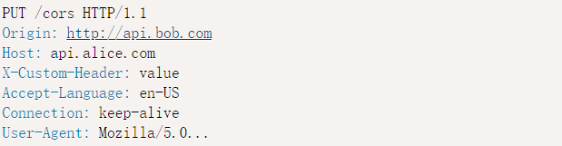

由于最近一个项目，采用的是前后端分离的开发模式，故在项目尾声进行接口调试的时候，便出现了跨域的问题。于是在Google与百度上查阅了不少的博客及资料。现总结一下解决的思路与方法。
什么是跨域请求
如果当前发起请求的域与该请求指向的资源所在的域不一样。就是一个跨域请求。例如：前端同事的机器地址是http://192.168.37.132:8080,我的机器地址 http://192.168.37.133:8081。 那么从他的电脑发起向我的电脑的数据请求就是一个跨域请求。如果从我的本机 http://localhost:8081 发起向后台 http://localhost:8081 的请求就是一个同源请求。
这里的域指的是这样的一个概念：协议 + 域名 + 端口号均相同，那么就是同域。否则是跨域。
浏览器对跨域做出的限制
正常的请求后台是可以返回接口数据的。但是如果是跨域请求，则后台接口数据是无法正确返回的，这时浏览器会报一个跨域错误。No ‘Access-Control-Allow-Origin’ header is present on the requested resource。这是因为浏览器对跨域请求作出了限制。那么浏览器为什么要对跨域请求作出限制呢？其实主要是出于安全方面的考虑，因为跨域请求有可能被不法分子利用来发动 CSRF(跨站请求伪造)攻击。具体什么是CSRF？请自行百度一下。目前我们只需要知道跨域请求会带来安全问题，所以浏览器会限制它的发生。具体如何解决，请看下文。
跨域解决方法
虽然在安全层面上跨域限制是必要的，但有时我们又需要发送跨域请求，比如我上面公司的项目遇到的情况。所以就需要绕开浏览器跨域的限制。方法有许多种，适应各种不同的情况。比如前端的话可以给请求加个代理。或者使用 JSONP, CORS 方法。下面就介绍一下 CORS 是如何解决跨域的。
跨域资源共享CORS
CORS是一个W3C标准，全称是”跨域资源共享”（Cross-origin resource sharing）。它允许浏览器向跨源服务器，发出XMLHttpRequest 请求。可以很好的解决 Ajax 只能同源使用的限制。CORS新增了一组HTTP首部字段。只要浏览器发现是跨域请求，就会自动添加一些附加的头信息，有时还会多出一次附加的请求，但用户不会有感觉。
下面是CORS中新增的HTTP首部字段：
- Origin //该首部字段表明预检请求或实际请求的源站。不管是否为跨域请求，Origin字段都会被发送。浏览器自行携带该字段。
- Access-Control-Request-Method //该首部字段用于预检请求。其作用是，将实际请求所使用的 HTTP 方法告诉服务器。浏览器自行携带该字段。
- Access-Control-Request-Headers //该首部字段用于预检请求。其作用是，将实际请求所携带的首部字段告诉服务器。浏览器自行携带该字段。
- Access-Control-Allow-Origin //表示服务器允许哪些域可以访问该资源，配置在服务端。
- Access-Control-Allow-Methods //表示服务器所允许的实际请求中使用的HTTP方法，配置在服务端。
- Access-Control-Allow-Headers //该首部字段用于预检请求的响应。指明了实际请求中允许携带的首部字段，配置在服务端。
- Access-Control-Max-Age //该首部字段用于预检请求的响应，指定了预检请求能够被缓存多久，配置在服务端。
- Access-Control-Allow-Credentials //表示是否允许发送Cookie，配置在服务端。
- Access-Control-Expose-Headers //表示如果想拿到其他字段，就必须在Access-Control-Expose-Headers里面指定。
CORS的两种请求
浏览器将CORS请求分成两类：简单请求（simple request）和非简单请求（not-so-simple request）。简单请求不会触发CORS预检请求。相反，非简单请求则会触发预检请求。就是我们所说的二次请求。
简单请求
（1) 请求方法是以下三种方法之一：
HEAD
GET
POST
（2）HTTP的头信息不超出以下几种字段：
Accept
Accept-Language
Content-Language
Last-Event-ID
Content-Type：只限于三个值application/x-www-form-urlencoded、multipart/form-data、text/plain
同时满足以上两种条件的即为简单请求。
对于简单请求，浏览器直接发出CORS请求。具体来说，就是在头信息之中，增加一个Origin字段（跨域的时候get，post都会显示origin，同域的时候get不显示origin，post显示origin）。
上面的头信息中，Origin 字段用来说明，本次请求来自哪个源。服务器根据这个值，决定是否同意这次请求。如果 Origin 指定的源，不在许可范围内，服务器会返回一个正常的HTTP回应。浏览器发现，这个回应的头信息没有包含Access-Control-Allow-Origin字段，就知道出错了，从而抛出一个错误，No ‘Access-Control-Allow-Origin’ header is present on the requested resource。被XMLHttpRequest的onerror回调函数捕获。
后台添加注解支持跨域请求
在类上1
2
3
4
5
6@CrossOrigin(origins = "http://api.bob.com", maxAge = 3600)
@RestController
@RequestMapping("/account")
public class AccountController {
// ...
}
在方法上1
2
3
4
5@CrossOrigin(origins = "http://api.bob.com")
@GetMapping("/{id}")
public Account retrieve(@PathVariable Long id) {
// ...
}
添加注解后，服务器返回的响应，会多出几个头信息字段。

非简单请求
非简单请求，比如请求方法是PUT或DELETE，或者Content-Type字段的类型是application/json，或者加了自定义头部信息的请求。非简单请求会发送两次请求，第一成为预检请求，第二次才是正常的跨域请求。
1.预检请求
非简单请求的CORS请求，会在正式通信之前，增加一次HTTP查询请求，称为”预检”请求（preflight）。浏览器先询问服务器，当前网页所在的域名是否在服务器的许可名单之中，以及可以使用哪些HTTP动词和头信息字段。只有得到肯定答复，浏览器才会发出正式的XMLHttpRequest请求，否则就报错。

上面代码中，HTTP请求的方法是PUT，并且发送一个自定义头信息X-Custom-Header。浏览器发现，这是一个非简单请求，就自动发出一个”预检”请求，要求服务器确认可以这样请求。”预检”请求用的请求方法是OPTIONS，表示这个请求是用来询问的。除了Origin字段，”预检”请求的头信息包括两个特殊字段。
（1）Access-Control-Request-Method
该字段是必须的，用来列出浏览器的CORS请求会用到哪些HTTP方法，上例是PUT。
（2）Access-Control-Request-Headers
该字段是一个逗号分隔的字符串，指定浏览器CORS请求会额外发送的头信息字段，上例是X-Custom-Header。
2.预检请求的回应
服务器收到”预检”请求以后，检查了Origin、Access-Control-Request-Method和Access-Control-Request-Headers字段以后，确认允许跨源请求，就可以做出回应。
后台可以增加一个过滤器，过滤所有的预检请求1
2
3
4
5
6
7
8
9
10
11
12
13
14
15
16
17
18
19
20
21@Override
public void doFilter(ServletRequest servletRequest, ServletResponse servletResponse, FilterChain filterChain) throws IOException, ServletException {
HttpServletRequest request = (HttpServletRequest) servletRequest;
HttpServletResponse response =(HttpServletResponse)servletResponse;
String token = request.getHeader("access_token");
System.out.println("filter access_token:"+token);
//预检请求
if ("OPTIONS".equals(request.getMethod())){
response.setHeader("Access-Control-Allow-Origin","*");
response.setHeader("Access-Control-Allow-Credentials","true");
response.setHeader("Access-Control-Allow-Methods","POST, GET, OPTIONS, DELETE, PUT, PATCH");
response.setHeader("Access-Control-Allow-Headers","Origin, No-Cache, X-Requested-With, If-Modified-Since, Pragma, Last-Modified, Cache-Control, Expires, Content-Type,Authorization,X-Custom-Header");
response.setHeader("Access-Control-Max-Age","3600");
response.setStatus(HttpStatus.OK.value());
}
filterChain.doFilter(servletRequest, servletResponse);
}
下面是通过预检请求的回应。

如果预检请求没有通过，会触发一个错误，被XMLHttpRequest对象的onerror回调函数捕获。控制台会打印出如下的报错信息。

3.第二次请求和回应
一旦服务器通过了”预检”请求，以后每次浏览器正常的CORS请求，就都跟简单请求一样，会有一个Origin头信息字段。服务器的回应，也都会有一个Access-Control-Allow-Origin头信息字段。
第二次请求

请求的正确回应